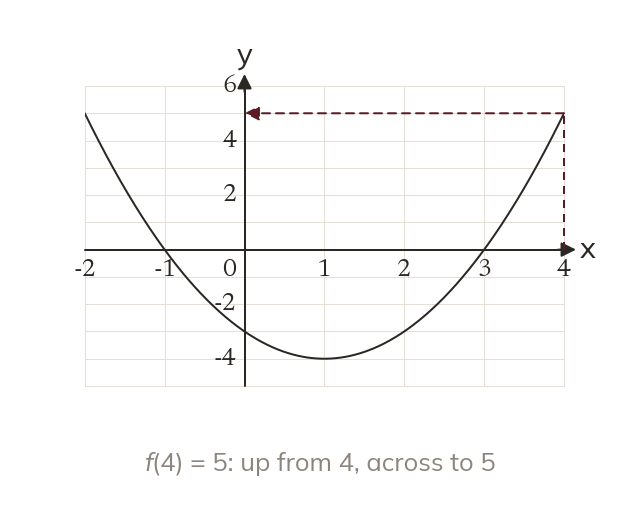
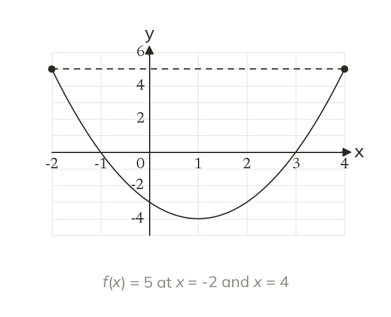
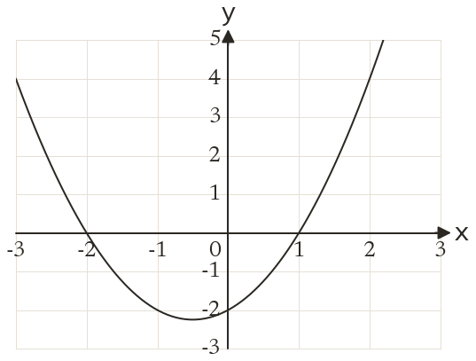
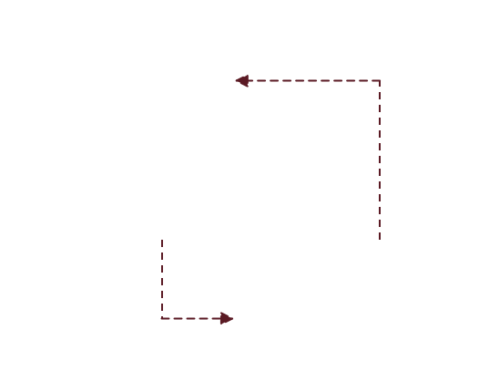
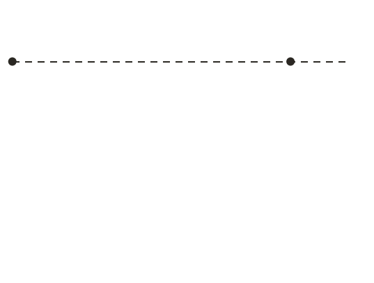
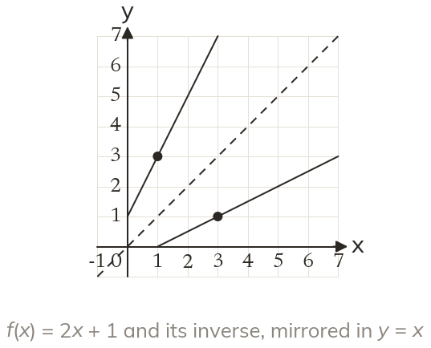
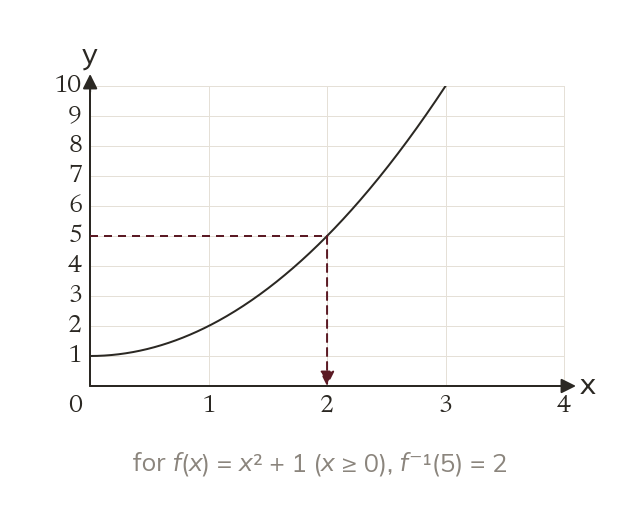
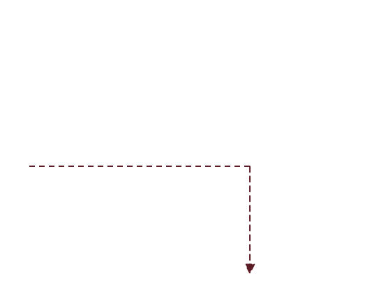
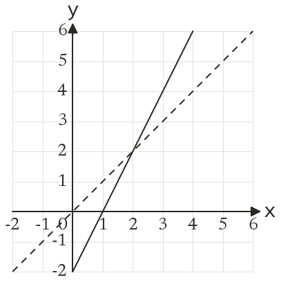
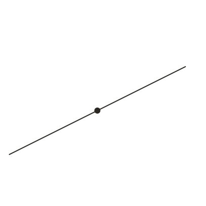

A point is an input and its output
Each point (a, b) on y = f(x) says f(a) = b. So f(a) is read up from x = a.
A graph shows every input and output of a function at once, so many answers can be read before any algebra. Today we read values, solve f(x) = k, and draw an inverse from the picture.
Work down the page at your own pace. Write every answer in your book first, then click to check it.
Read each card, then follow the worked examples one step at a time.

Each point (a, b) on y = f(x) says f(a) = b. So f(a) is read up from x = a.

Solving f(x) = k reads across from the height k. Every crossing gives a solution.



Pick an answer. If it's wrong, the feedback tells you which mistake it was.
Printable worksheet — the questions with room to work.

Read each card, then follow the worked examples one step at a time.

The inverse swaps each point (a, b) to (b, a). So y = f⁻¹(x) is y = f(x) reflected in y = x.

The inverse at b is the input that gave the output b. On the graph of f, it is read across from b, then down.



Pick an answer. If it's wrong, the feedback tells you which mistake it was.
Finished? Next lesson: 11H.9.9 Vertical Graph Transformations.
Log in, then search for a code to practise that skill.
Videos, worksheets and more on each part of this lesson.